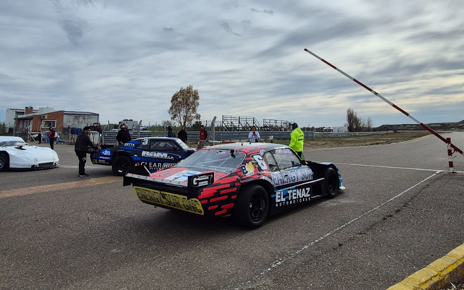

Cuenta Vueltas 77
Cobertura del automovilismo zonal: Noticias, Pilotos, Historias, Categorías y más.
Últimas notas

Se corrió la fecha 9 del campeonato.
Un campeonato que se define en la ultima para todas las categorias.

Los elegidos de la gente.
Este viernes se hicieron entrega de los trofeos a los pilotos de la fecha.


Fecha 7 en Trelew: sorpresas y definiciones ajustadas
Fin de semana intenso en el Mar y Valle.
Gran sábado para Agrelo; pero no pudo completar una buena final.
Fue dominador de su serie pero en la final se complico.